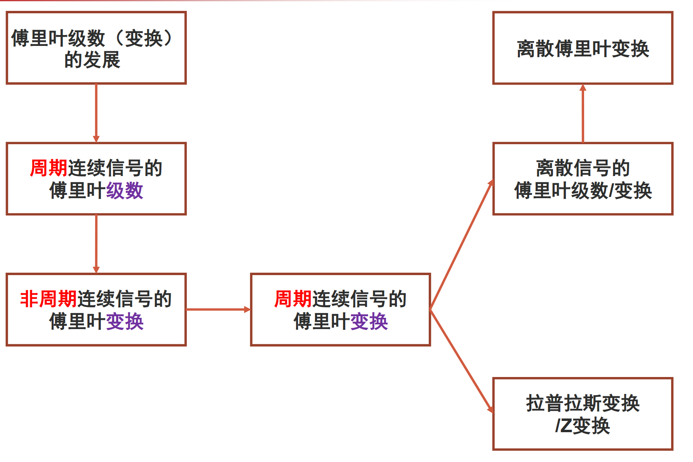
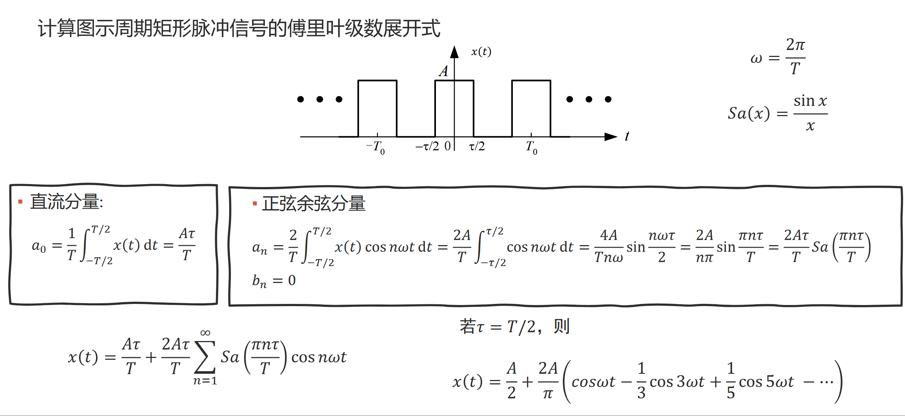
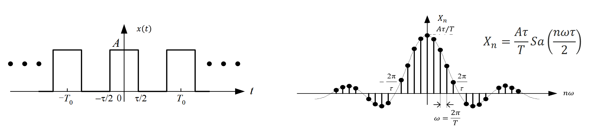
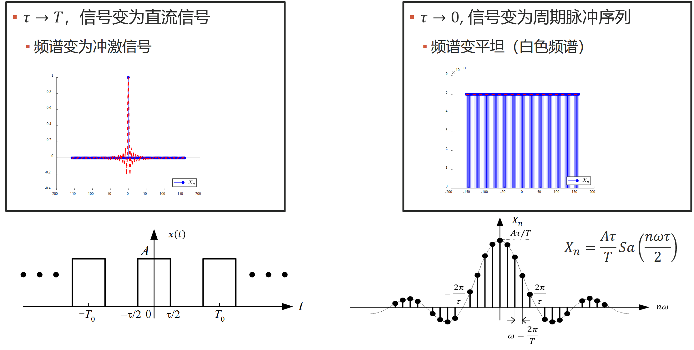
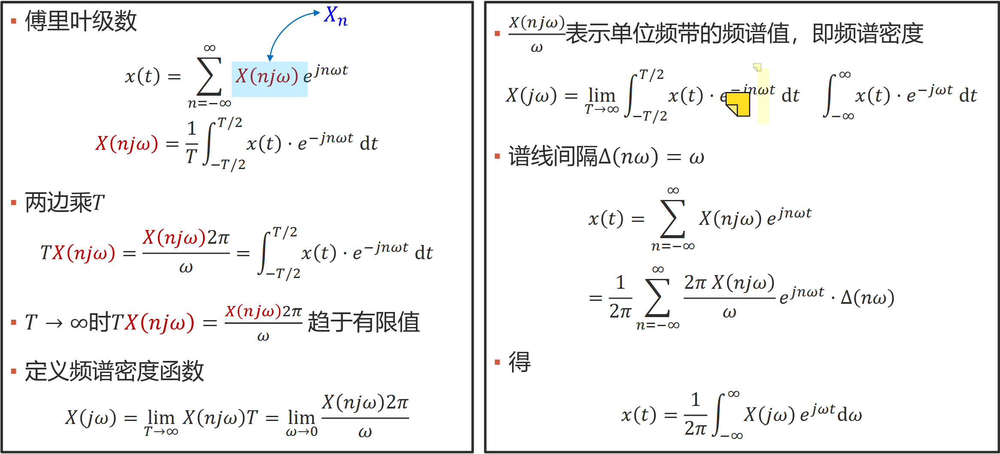
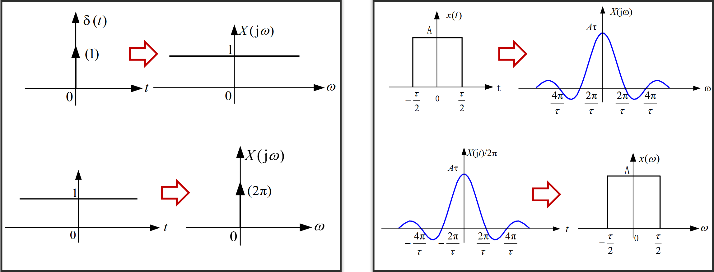
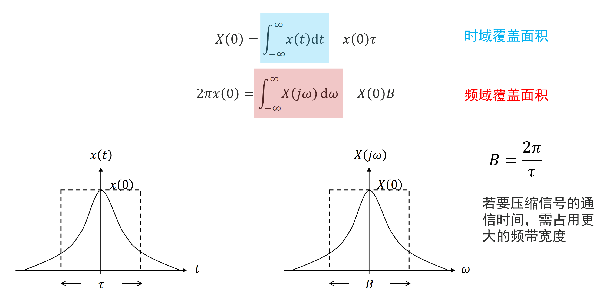
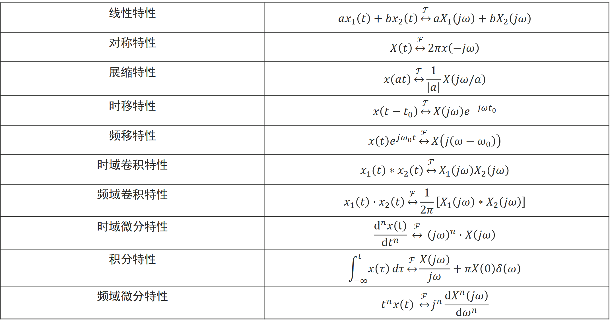
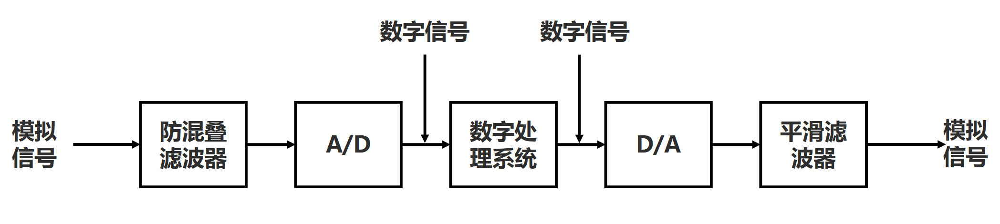
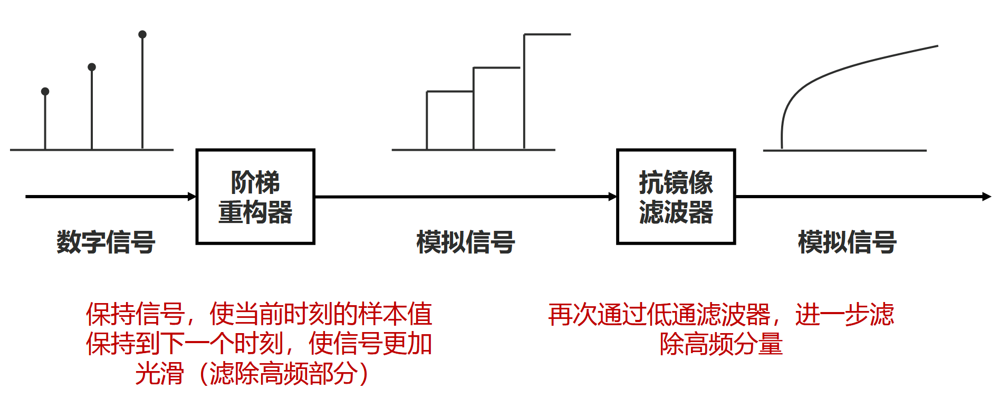

数字信号处理复习总结Part2
04 信号的傅里叶级数
一、傅里叶级数的定义
- 三角函数族的分解
- 基函数集：{cos nωt, sin nωt}, n = 0, 1, 2, ⋯, ∞
- 分解系数： $a_0=\frac{<x,1>}{<1,1>}=\frac{1}{T}\int_{t_0}^{t_0+T}x(t)dt$ $a_n=\frac{<x,\cos n\omega t>}{<\cos n\omega t,\cos n\omega t>}=\frac{2}{T}\int_{t_0}^{t_0+T}x(t)\cos n\omega tdt$ $b_n=\frac{<x,\sin n\omega t>}{<\sin n\omega t,\sin n\omega t>}=\frac{2}{T}\int_{t_0}^{t_0+T}x(t)\sin n\omega tdt$
- 函数表示： $x(t)=a_0+\sum\limits_{n=1}^{\infty}a_n\cos n\omega t+\sum\limits_{n=1}^{\infty}b_n\sin n\omega t$
- 指数函数族的分解
基函数集：{ejnωt}, n = 0, ±1, ±2, ⋯, ±∞
分解系数：
$X_n=\frac{<x,e^{jn\omega t}>}{<e^{jn\omega t},e^{jn\omega t}>}=\frac{1}{T}\int_{t_0}^{t_0+T}x(t)\cdot e^{-jn\omega t}dt=\frac{1}{T}\int_{t_0}^{t_0+T}x(t)\cdot(\cos n\omega t-j\sin n\omega t)dt=\frac{1}{2}a_n-\frac{j}{2}b_n$
$a_n=\frac{<x,\cos n\omega t>}{<\cos n\omega t,\cos n\omega t>}=\frac{2}{T}\int_{t_0}^{t_0+T}x(t)\cos n\omega tdt$，$b_n=\frac{<x,\sin n\omega t>}{<\sin n\omega t,\sin n\omega t>}=\frac{2}{T}\int_{t_0}^{t_0+T}x(t)\sin n\omega tdt$
函数表示：
$x(t)=\sum\limits_{n=-\infty}^{\infty}X_ne^{jn\omega t}=\sum\limits_{n=-\infty}^{\infty}X_n(\cos n\omega t+j\sin n\omega t)$
- 由傅里叶级数到傅里叶变换的思路 
二、傅里叶级数和频域
- 频域 & 时域
- 频域将信号表示为不同频率正弦分量的线性组合
- 从信号分析的角度，将信号表示为不同频率正弦分量的线性组合，为不同信号之间进行比较提供了途径
- 从系统分析角度，已知单频正弦信号激励下的响应，利用迭加特性可求得多个不同频率正弦信号同时激励下的总响应，及每个正弦分量通过系统后的变化
- 时域：时间-幅度；频域：频率-幅度
- 周期信号的傅里叶级数表示（三角形式） $x(t)=a_0+\sum\limits_{n=1}^{\infty}a_n\cos n\omega t+\sum\limits_{n=1}^{\infty}b_n\sin n\omega t=c_0+\sum\limits_{n=1}^{\infty}c_n\cos(n\omega t+\varphi_n)$
- $c_0=a_0,c_n=\sqrt{a^2_n+b^2_n},b_n=-c_n\sin\varphi_n,a_n=c_n\cos\varphi_n,\tan\varphi_n=-\frac{b_n}{a_n}$
- c0为信号的直流分量，cncos (nωt + φn)为n次谐波分量
- 正弦、余弦分量的频率为基频$f=\frac{1}{T}$的整数倍
周期信号的傅里叶级数（指数形式）
合成（synthesis）公式：$x(t)=\sum\limits_{n=-\infty}^{\infty}X_ne^{jn\omega t}$ 分析（analysis）公式：$X_n=\frac{<x,e^{jn\omega t}>}{<e^{jn\omega t,jn\omega t}>}=\frac{1}{T}\int_{t_0}^{t_0+T}x(t)\cdot e^{-jn\omega t}dt$
n = ±1，两项的基波频率为ω，两项合起来称为信号的基波分量
n = ±2，两项的基波频率为2ω，两项合起来称为信号的2次谐波分量
n = ±N，两项的基波频率为Nω，两项合起来称为信号的N次谐波分量
$X_n=\frac{<x,e^{jn\omega t}>}{<e^{jn\omega t,jn\omega t}>}=\frac{1}{T}\int_{t_0}^{t_0+T}x(t)\cdot e^{-jn\omega t}dt=\frac{1}{T}\int_{t_0}^{t_0+T}x(t)\cdot(\cos n\omega t-j\sin n\omega t)dt=\frac{1}{2}a_n-\frac{j}{2}b_n$
$X_0=c_0=a_0,X_{-n}=\frac{1}{2}a_n+\frac{j}{2}b_n,|X_n|=\frac{1}{2}\sqrt{a^2_n+b^2_n}$ an = Xn + X−n, bn = j(Xn − X−n), cn = |Xn|+|X−n|
不同的时域信号，只是傅里叶级数的系数 Xn 不同，因此通过研究傅里叶级数的系数来研究信号的特性。
Xn 是频率的函数，它反映了组成信号各次谐波的幅度和相位随频率变化的规律，称频谱函数。
- 周期信号的傅里叶级数收敛条件
- 能量条件
- 周期信号 x(t) 在一个周期内的能量有限： ∫−T/2T/2|x(t)|2dt < ∞
- 能量有限不代表重构的信号和 x(t) 在每一个 t 值上都相等，只说明二者在能量上没有差异
- Dirichlet条件（波形条件）
- （1）【充分非必要条件】在一个周期内绝对可积，即满足 ∫−T/2T/2|x(t)|dt < ∞
- （2）【必要非充分条件】在一个周期内只有有限个有限的不连续点
- （3）【必要非充分条件】在一个周期内只有有限个极大值和极小值
- 在 x(t) 不连续点处，傅里叶级数重构信号收敛于不连续点两边的平均值
- 帕塞瓦尔定理（时域和频域能量/功率守恒定理） $P=\frac{1}{T}\int_{-T/2}^{T/2}|x(t)|^2dt=a_0^2+\frac{1}{2}\sum\limits_{n=1}^{\infty}(a_n^2+b_n^2)=c_0^2+\frac{1}{2}\sum\limits_{n=1}^{\infty}c_n^2=\sum\limits_{n=-\infty}^{\infty}|X_n|^2$
- 物理意义：任意周期信号的平均功率等于信号所包含的直流、基波以及各次谐波的平均功率之和。
- 周期信号的功率频谱: |Xn|2 随 nω 分布情况称为周期信号的功率频谱，简称功率谱。
三、傅里叶级数的计算
- 傅里叶级数的对称特性
- 偶信号（x(t) = x(−t)）的傅里叶级数展开式中只含有直流项和余弦项
- 奇信号（x(t) = −x(−t)）的傅里叶级数展开式中只含有正弦项
- 奇谐（半波镜像）信号（$x(t)=-x(t\pm\frac{T}{2})$）的傅里叶级数展开式中只含有正弦与余弦的奇次谐波分量，而无直流分量与偶次谐波分量。
- 偶谐（半波重叠）信号（$x(t)=x(t\pm\frac{T}{2})$）的傅里叶级数展开式中只含有正弦与余弦的偶次谐波分量，而无奇次谐波分量。
- 吉布斯（Gibbs）现象
- 用有限次谐波分量来近似原信号，在不连续点出现过冲，过冲峰值不随谐波分量增加而减少，随 N 增大而趋于一个常数，约等于总跳变值的9% 。
- 吉布斯现象产生原因：时间信号存在跳变破坏了信号的收敛性，使得在间断点傅里叶级数出现非一致收敛。

指数分量：$X_n=\frac{1}{T}\int_{-T/2}^{T/2}x(t)\cdot e^{-jn\omega t}dt=\frac{A\tau}{T}Sa(\frac{n\omega\tau}{2})$
$x(t)=\frac{A\tau}{T}\sum\limits_{n=-\infty}^{\infty}Sa(\frac{n\omega\tau}{2})e^{-jn\omega t},\omega=\frac{2\pi}{T}$
周期信号的频谱是由间隔为 ω 的谱线组成的。
信号周期 T 越大，ω 就越小，则谱线越密。反之，T 越小，ω 越大，谱线则越稀疏。
当周期信号的幅度频谱随着谐波 nω 增大时，幅度频谱 |Xn| 不断衰减，并最终趋于零。

- 信号的有效带宽：$0-\frac{2\pi}{\tau}$ 这段频率范围称为周期矩形脉冲信号的有效频带宽度，即 $\omega_B=\frac{2\pi}{\tau}$
- 信号的有效带宽与信号时域的持续时间 τ 成反比。τ 越大，其 ωB 越小；反之，τ 越小，其 ωB 越大。
- 信号的有效带宽的物理意义：在信号的有效带宽内，集中了信号绝大部分谐波分量。若信号丢失有效带宽以外的谐波成分，不会对信号产生明显影响。当信号通过系统时，信号与系统的有效带宽必须“匹配”。
- 幅度衰减特性
- 若信号时域波形变化越平缓，高次谐波成分就越少，幅度频谱衰减越快；若信号时域波形变化跳变越多，高次谐波成分就越多，幅度频谱衰减越慢。
- x(t) 不平滑，|Xn| 按 1/n 的速度衰减
- x(t) 平滑，|Xn| 按 1/n2 的速度衰减
- 离散频谱特性

四、系统函数
- 假设 h(t) 为线性时不变系统的的单位冲激响应，则 ejωt * h(t) = ∫−∞∞ejω(t − τ)h(τ)dτ = ejωt∫−∞∞e−jωτh(τ)dτ = ejωtH(jω)
- 针对一般复数 s，H(s) 为系统函数；
- 若为纯虚数，则 H(jω) 为频率响应
- 若周期信号的傅里叶级数为 $x(t)=\sum\limits_{n=-\infty}^{\infty}X_ne^{jn\omega t}$，若该信号输入冲激响应为 h(t) 的线性时不变系统，则输出为：$y(t)=x(t)*h(t)=\sum\limits_{n=-\infty}^{\infty}X_nH(jn\omega)e^{jn\omega t}$
- y(t) 也是周期的，与 x(t) 有相同的基波频率，{XnH(jnω)} 为 y(t) 的傅里叶级数。
05 信号的傅里叶变换
一、傅里叶变换的定义
- 傅里叶变换/傅里叶逆变换公式的推导 增大周期T → ∞，周期信号近似非周期信号，谱线间隔 ω → 0，离散频谱趋于连续频谱，此时 Xn → 0： 
- 傅里叶变换/傅里叶逆变换
傅里叶变换：X(jω) = ℱ[x(t)] = ∫−∞∞x(t) ⋅ e−jωtdt
傅里叶逆变换：$x(t)=\mathcal{F}^{-1}[X(j\omega)]=\frac{1}{2\pi}\int_{-\infty}^{\infty}X(j\omega)e^{j\omega t}d\omega$
X(jω) = |X(jω)|ejφ(ω) 一般是复函数，|X(jω)|−ω 曲线为幅度频谱，ejφ(ω) − ω 曲线为相位频谱
对于实信号 x(t)，有 $x(t)=\mathcal{F}^{-1}[X(j\omega)]=\frac{1}{2\pi}\int_{-\infty}^{\infty}X(j\omega)e^{j\omega t}d\omega=\frac{1}{2\pi}\int_{-\infty}^{\infty}|X(j\omega)|e^{j\varphi(\omega)}e^{j\omega t}d\omega$
$=\frac{1} {2\pi}\int_{-\infty}^{\infty}|X(j\omega)|\cos(\omega t+\varphi(\omega))d\omega+\frac{j}{2\pi}\int_{-\infty}^{\infty}|X(j\omega)|\sin(\omega t+\varphi(\omega))d\omega$
- 收敛条件（类比傅里叶级数的收敛条件）
- 波形条件：
- 非周期信号在无限区间上绝对可积：∫−∞∞|x(t)|dt < ∞
- 在任意有限区间内，信号只有有限个最大值和最小值
- 在任意有限区间内，信号仅有有限个不连续点，且这些点必须是有限值
- 是充分条件，但不是必要条件
- 傅里叶变换的特点
- 非周期矩形脉冲信号的频谱是连续频谱，其形状与周期矩形脉冲信号离散频谱的包络线相似
- 周期信号的离散频谱可以通过对非周期信号的连续频谱等间隔抽样求得
- 信号在时域有限，则在频域将无限延续
- 信号的频谱分量主要集中在零频到第一个过零点之间，工程中往往将此宽度作为有效带宽
- 脉冲宽度 τ 越窄，有效带宽越宽，高频分量越多。即信号信息量大，传送信号所占用频带越宽。
二、典型信号的傅里叶变换
- 单边指数信号 x(t) = e−αtu(t), α > 0 的频谱：$F[e^{-\alpha t}u(t)]=\frac{1}{\alpha+j\omega}$
- $X(j\omega)=\int_{-\infty}^{\infty}x(t)e^{-j\omega t}dt=\int_{0}^{\infty}e^{-\alpha t}e^{-j\omega t}dt=\frac{e^{-(\alpha+j\omega)t}}{-(\alpha+j\omega)}\big|_{0}^{\infty}=\frac{1}{\alpha+j\omega}$
- 幅度谱：$|X(j\omega)|=\frac{1}{\sqrt{\alpha^2+\omega^2}}$
- 相位谱：$\varphi(\omega)=-\arctan(\frac{\omega}{\alpha})$
- 双边指数信号 x(t) = e−α|t| 的频谱：$F[e^{-\alpha|t|}]=\frac{2\alpha}{\alpha^2+\omega^2}$
X(jω) = ∫−∞∞x(t)e−jωtdt = ∫−∞0eαte−jωtdt + ∫0∞e−αte−jωtdt = 2∫0∞e−αtcos (ωt)dt
$=2e^{-\alpha t}\frac{\omega\sin\omega t-\alpha\cos\omega t }{\alpha^2+\omega^2}\big|_{0}^{\infty}=\frac{2\alpha}{\alpha^2+\omega^2}$
幅度谱：$|X(j\omega)|=\frac{2\alpha}{\alpha^2+\omega^2}$
相位谱：0
- 单位冲激信号 x(t) = δ(t) 的频谱：ℱ[δ(t)] = 1
- ℱ[δ(t)] = ∫−∞∞x(t)e−jωtdt = ∫−∞∞δ(t)e−jωtdt = 1
- 时域变化异常剧烈的冲激函数包含幅度相等的所有频率分量，这种频谱也称为“均匀谱”或“白色谱”
- 直流信号 x(t) = 1 的频谱：ℱ[1] = 2πδ(ω)
- 由于 $\mathcal{F}^{-1}[\delta(\omega)]=\frac{1}{2\pi}\int_{-\infty}^{\infty}\delta(\omega)e^{j\omega t}d\omega=\frac{1}{2\pi}$，所以 ℱ−1[2πδ(ω)] = 1，ℱ[1] = 2πδ(ω)
- 直流信号的傅里叶变换是冲激信号
- 直流信号不满足绝对可积条件，可用极限的方法求出傅里叶变换： $\mathcal{F}[1]=\lim\limits_{\sigma\rightarrow0}\mathcal{F}[1\cdot e^{-\sigma|t|}]=\lim\limits_{\sigma\rightarrow0}[\frac{2\sigma}{\sigma^2+\omega^2}]=2\pi\delta(\omega)$ $\lim\limits_{\sigma\rightarrow0}=\begin{cases}0 & \omega\ne0 \\ \infty & \omega=0\end{cases}$ $\int_{-\infty}^{\infty}\frac{2\sigma}{\sigma^2+\omega^2}d\omega=2\arctan(\frac{\omega}{\sigma})\big|_{\omega=-\infty}^{\infty}=2\pi$
- 对照冲激、直流时频曲线可看出： 时域持续越宽的信号，其频域的频谱越窄；时域持续越窄的信号，其频域的频谱越宽。
- 符号函数 $x(t)=sgn(t)=\begin{cases}-1&t<0\\0&t=0\\1&t>0\end{cases}$ 的频谱：$\mathcal{F}[sgn(t)]=\frac{2}{j\omega}$
- $$\mathcal{F}[sgn(t)e^{-\sigma|t|}]=\int_{-\infty}^{0}-e^{\sigma t}e^{-j\omega t}dt+\int_{0}^{\infty}e^{-\sigma t}e^{-j\omega r}dt=-\frac{e^{(\sigma-j\omega)t}}{\sigma-j\omega}\big|_{t=-\infty}^{0}-\frac{e^{-(\sigma+j\omega)t}}{\sigma+j\omega}\big|_{t=0}^{\infty}=-\frac{1}{\sigma-j\omega}+\frac{1}{\sigma+j\omega}$$
- $\mathcal{F}[sgn(t)]=\lim\limits_{\sigma\rightarrow0}\mathcal{F}[sgn(t)e^{-\sigma|t|}]=\frac{2}{j\omega}$
- 单位阶跃信号 x(t) = u(t) 的频谱：$\mathcal{F}[u(t)]=\pi\delta(\omega)+\frac{1}{j\omega}$
- $u(t)=\frac{1}{2}[u(t)+u(-t)]+\frac{1}{2}[u(t)-u(-t)]=\frac{1}{2}+\frac{1}{2}sgn(t)$
- $\mathcal{F}[u(t)]=\mathcal{F}[\frac{1}{2}+\frac{1}{2}sgn(t)]=\pi\delta(\omega)+\frac{1}{j\omega}$
- 由于 u(t) 含有直流分量，因此 ω = 0 处有冲激函数
- u(t) 在 t = 0 时有跳变，频谱中也包含其他分量
三、傅里叶变换的性质
- 线性特性：若 $x_1(t)\overset{\mathcal{F}}{\longleftrightarrow}X_1(j\omega),x_2(t)\overset{\mathcal{F}}{\longleftrightarrow}X_2(j\omega)$，则 $ax_1(t)+bx_2(t)\overset{\mathcal{F}}{\longleftrightarrow}aX_1(j\omega)+bX_2(j\omega)$，其中 a 和 b 均为常数
- 对称性：若 $x(t)\overset{\mathcal{F}}{\longleftrightarrow}X(j\omega)$，则 $X(t)\overset{\mathcal{F}}{\longleftrightarrow}2\pi x(-j\omega)$；若 x(t) 为偶函数，则 $X(t)\overset{\mathcal{F}}{\longleftrightarrow}2\pi x(-j\omega)$
- 由于 $x(t)=\mathcal{F}^{-1}[X(j\omega)]=\frac{1}{2\pi}\int_{-\infty}^{\infty}X(j\omega)e^{j\omega t}d\omega$，$x(-t)=\mathcal{F}^{-1}[X(j\omega)]=\frac{1}{2\pi}\int_{-\infty}^{\infty}X(j\omega)e^{-j\omega t}d\omega$，
- 将 t 与 jω 互换可得：$x(-j\omega)=\frac{1}{2\pi}\int_{-\infty}^{\infty}X(t)e^{-j\omega t}dt=\frac{\mathcal{F}[X(t)]}{2\pi}$
- 
- 奇偶虚实性
X(jω) 可表示为 X(jω) = |X(jω)|ejφ(ω) = XR(ω) + jXI(ω)
且有 $|X(\omega)|=\sqrt{X_R^2(\omega)+X_I^2(\omega)},\varphi(\omega)=\arctan\frac{X_I(\omega)}{X_R(\omega)}$
若 x(t) 是实函数，X(jω) = ∫−∞∞x(t) ⋅ e−jωtdt = ∫−∞∞x(t)cos ωtdt − j∫−∞∞x(t)sin ωtdt = XR(ω) + jXI(ω)，
则 XR(ω) 为偶函数，XI(ω) 为奇函数，|X(ω)| 为偶函数，φ(ω) 为奇函数，X(−jω) = X*(jω)
若 x(t) 是实偶函数，则 XI(ω) = 0，X(jω) = XR(ω) = 2∫0∞x(t)cos ωtdt
若 x(t) 是实奇函数，则 XR(ω) = 0，X(jω) = jXI(ω) = −2j∫0∞x(t)sin ωtdt
- 尺度变换特性：若 $x(t)\overset{\mathcal{F}}{\longleftrightarrow}X(j\omega)$，则 $x(at)\overset{\mathcal{F}}{\longleftrightarrow}\frac{1}{|a|}X(j\omega/a)$
- 若 a = −1，则 $x(-t)\overset{\mathcal{F}}{\longleftrightarrow}X(-j\omega)$，时域翻转频域也翻转
- 时域压缩，则频域拉伸；拉伸时域，则频域压缩。
- 时域覆盖面积：X(0) = ∫−∞∞x(t)dt
- 频域覆盖面积：2πx(0) = ∫−∞∞X(jω)dω
- 
- 时移特性：若 $x(t)\overset{\mathcal{F}}{\longleftrightarrow}X(j\omega)$，则 $x(t-t_0)\overset{\mathcal{F}}{\longleftrightarrow}X(j\omega)e^{-j\omega t_0}$
- 信号在时域中的时移，对应频谱函数在频域中产生的附加相移，而幅度频谱保持不变。
- $x(at-t_0)\overset{\mathcal{F}}{\longleftrightarrow}\frac{1}{|a|}X(\frac{j\omega}{a})e^{-j\frac{\omega t_0}{a}}$
- $x(t_0-at)\overset{\mathcal{F}}{\longleftrightarrow}\frac{1}{|a|}X(-\frac{j\omega}{a})e^{-j\frac{\omega t_0}{a}}$
- 频移特性（调制定理）
若 $x(t)\overset{\mathcal{F}}{\longleftrightarrow}X(j\omega)$，则 $x(t)e^{j\omega_0 t}\overset{\mathcal{F}}{\longleftrightarrow}X(j(\omega-\omega_0))$；$x(t)e^{-j\omega_0 t}\overset{\mathcal{F}}{\longleftrightarrow}X(j(\omega+\omega_0))$
$\mathcal{F}[x(t)\cos\omega_0 t]=\frac{1}{2}X(j(\omega-\omega_0))+\frac{1}{2}X(j(\omega+\omega_0))$
$\mathcal{F}[x(t)\cos\omega_0 t]=\frac{1}{2}\mathcal{F}[x(t)e^{j\omega_0t}]+\frac{1}{2}\mathcal{F}[x(t)e^{-j\omega_0t}]=\frac{1}{2}X(j(\omega-\omega_0))+\frac{1}{2}X(j(\omega+\omega_0))$
$\mathcal{F}[x(t)\sin\omega_0 t]=-\frac{j}{2}X(j(\omega-\omega_0))+\frac{j}{2}X(j(\omega+\omega_0))$
$\mathcal{F}[x(t)\sin\omega_0 t]=\frac{1}{2j}\mathcal{F}[x(t)e^{j\omega_0t}]-\frac{1}{2j}\mathcal{F}[x(t)e^{-j\omega_0t}]=-\frac{j}{2}X(j(\omega-\omega_0))+\frac{j}{2}X(j(\omega+\omega_0))$
- 时域积分微分特性
- 若 $x(t)\overset{\mathcal{F}}{\longleftrightarrow}X(j\omega)$，则 $\int_{-\infty}^{t}x(\tau)d\tau\overset{\mathcal{F}}{\longleftrightarrow}\frac{X(j\omega)}{j\omega}+\pi X(0)\delta(\omega)$
- 若 $x(t)\overset{\mathcal{F}}{\longleftrightarrow}X(j\omega)$，则 $\frac{d^nx(t)}{dt^n}\overset{\mathcal{F}}{\longleftrightarrow}(j\omega)^n\cdot X(j\omega)$
- 频域微分特性
- 若 $x(t)\overset{\mathcal{F}}{\longleftrightarrow}X(j\omega)$，则 $t^nx(t)\overset{\mathcal{F}}{\longleftrightarrow}j^n\frac{dX^n(j\omega)}{d\omega^n}$
- 求单位斜坡信号 tu(t) 的频谱
- 已知 $\mathcal{F}[u(t)]=\pi\delta(\omega)+\frac{1}{j\omega}$
- $\mathcal{F}[tu(t)]=j\frac{d}{d\omega}[\pi\delta(\omega)+\frac{1}{j\omega}]=j\pi\delta^{'}(\omega)-\frac{1}{\omega^2}$
- 时域卷积特性：若 $x_1(t)\overset{\mathcal{F}}{\longleftrightarrow}X_1(j\omega),x_2(t)\overset{\mathcal{F}}{\longleftrightarrow}X_2(j\omega)$，则 $x_1(t)*x_2(t)\overset{\mathcal{F}}{\longleftrightarrow}X_1(j\omega)X_2(j\omega)$
- 频域卷积特性：若 $x_1(t)\overset{\mathcal{F}}{\longleftrightarrow}X_1(j\omega),x_2(t)\overset{\mathcal{F}}{\longleftrightarrow}X_2(j\omega)$，则 $x_1(t)\cdot x_2(t)\overset{\mathcal{F}}{\longleftrightarrow}\frac{1}{2\pi}[X_1(j\omega)*X_2(j\omega)]$
- 非周期信号的能量谱密度
- Parseval能量守恒定理：$\int_{-\infty}^{\infty}|x(t)|^2dt=\frac{1}{2\pi}\int_{-\infty}^{\infty}|X(j\omega)|^2d\omega$
- 物理意义：非周期能量信号的归一化能量在时域中与在频域中相等，保持能量守恒。
傅里叶变换性质总结

四、周期信号的傅里叶变换
- 典型周期信号的傅里叶变换
- ℱ[1] = 2πδ(ω)
- ℱ[ejω0t] = 2πδ(ω − ω0), ℱ[e−jω0t] = 2πδ(ω + ω0)
- ℱ[cos (ω0t)] = πδ(ω − ω0) + πδ(ω + ω0), ℱ[sin (ω0t)] = jπ[δ(ω + ω0) − δ(ω − ω0)]
- 一般周期信号的傅里叶变换
- 设信号 x(t) 的周期为 T0，角频率 $\omega_0=\frac{2\pi}{T_0}$，$\mathcal{F}[x(t)]=2\pi\sum\limits_{n=-\infty}^{\infty}X_n\delta(\omega-n\omega_0)$，$X_n=\frac{1}{T}\int_{t_0}^{t_0+T}x(t)\cdot e^{-jn\omega_0 t}dt$
- 截取一个周期的信号，对应的傅里叶变换为 XT0(jω) = ∫−T0/2T0/2x(t) ⋅ e−jωtdt， $X_n=\frac{1}{T_0}X_{T_0}(j\omega)\big|_{\omega=n\omega_0}$，也就是说周期信号的傅里叶级数的系数等于一个周期的信号的傅里叶变换在 nω0 点处取值乘 $\frac{1}{T_0}$
06 信号的采样
- 信号处理与分析的典型过程（A:Analog,D:Digital） 
- 为什么要进行信号采样
- 信号稳定性好：数据用二进制表示，受外界影响小。
- 信号稳定性好：数据用二进制表示，受外界影响小。
- 信号可靠性高：存储无损耗，传输抗干扰。
- 信号处理简便：信号压缩，信号编码，信号加密等
- 信号处理简便：信号压缩，信号编码，信号加密等
- 系统精度高：可通过增加字长提高系统的精度。
- 系统精度高：可通过增加字长提高系统的精度。
- 系统灵活性强：改变系统的系数使系统完成不同功能。
- 信号的时域采样
【理想采样】信号 x(t) 使用周期冲激信号 $\delta_{T_s}(t)=\sum\limits_{n=-\infty}^{\infty}\delta(t-nT_s)$ 采样得到 xs(t)，$x_s(t)=x(t)\cdot \delta_{T_s}(t)=x(t)\cdot \sum\limits_{n=-\infty}^{\infty}\delta(t-nT_s)=\sum\limits_{n=-\infty}^{\infty}x(nT_s)\delta(t-nT_s)$
求解 ℱ[δTs(t)]，首先计算傅里叶级数：$X_n=\frac{1}{T_s}\int_{-T_s/2}^{T_s/2}\delta_{T_s}(t)e^{-jn\omega_s t}dt=\frac{1}{T_s}$
傅里叶变换为：$\mathcal{F}[\delta_{T_s}(t)]=2\pi\sum\limits_{n=-\infty}^{\infty}X_n\delta(\omega-n\omega_s)=\omega_s\sum\limits_{n=-\infty}^{\infty}\delta(\omega-n\omega_s)$
$\mathcal{F}[x_s(t)]=\mathcal{F}[x(t)\cdot \delta_{T_s}(t)]=\frac{1}{2\pi}[X(j\omega)*\mathcal{F}[\delta_{T_s}(t)]]=\frac{1}{2\pi}[X(j\omega)*\omega_s\sum\limits_{n=-\infty}^{\infty}\delta(\omega-n\omega_s)]=\frac{1}{T_s}\sum\limits_{n=-\infty}^{\infty}X(j(\omega-n\omega_s))$
时域对信号做离散化，频域表现为原始时域信号频谱 X(jω) 的周期延拓（重复），时域的离散化导致了频域的周期性
- 信号的频域采样
频域信号 X(jω) 使用频域脉冲序列 $\delta_{\omega_s}(\omega)=\sum\limits_{n=-\infty}^{\infty}\delta(\omega-n\omega_s)$ 采样得到 Xs(jω)，因此Xs(jω) = X(jω) ⋅ δωs(ω)
设 ℱ−1[X(jω)] = x(t)，ℱ−1[Xs(jω)] = xs(t)，由于 $\mathcal{F}[\delta_{T_s}(t)]=\omega_s\sum\limits_{n=-\infty}^{\infty}\delta(\omega-n\omega_s)=\omega_s\delta_{\omega_s}(\omega)$,
所以 $\mathcal{F}^{-1}[\delta_{\omega_s}(\omega)]=\frac{1}{\omega_s}\delta_{T_s}(t)$
由卷积定理可得：$x_s(t)=\mathcal{F}^{-1}[X(j\omega)\cdot\delta_{\omega_s}(\omega)]=x(t)*\frac{1}{\omega_s}\delta_{T_s}(t)=x(t)*[\frac{1}{\omega_s}\sum\limits_{n=-\infty}^{\infty}\delta(t-nT_s)]=\frac{1}{\omega_s}\sum\limits_{n=-\infty}^{\infty}x(t-nT_s)$
频域的离散化对应时域信号的周期延拓
时域 & 频域的关系
一个域的离散化和另一个域的周期性相对应，反之，一个域的连续性与另一个域的非周期性相对应
时域采样定理
- 采样定理：若连续信号 x(t) 是一个频带受限信号（若|ω| > ωm 则 X(jω) = 0，ωm = 2πfm），x(t) 的等间隔样本值 xs(t)，用 xs(t) 唯一表示 x(t) 的条件是 $T_s<\frac{1}{2f_m}$，即 ωs > 2ωm，fs = 2fm 为最小采样频率
- 条件：等间隔采样，频带受限信号；唯一恢复条件（采样频率）；恢复方法（低通滤波器）
- 已知实信号 x(t)
的最高频率为 fm(Hz)，试计算对各信号
x(2t)，x(t) * x(2t)，x(t) ⋅ x(2t)
采样不混叠的最小采样频率。
- 对信号 x(2t) 采样时，最小采样频率为 4fm(Hz)
- 对信号 x(t) * x(2t) 采样时，最小采样频率为 2fm(Hz)
- 对信号 x(t) ⋅ x(2t) 采样时，最小采样频率为 6fm(Hz)
- 时域相乘相当于频域卷积，所以带宽为 ω1 + ω2
- 时域卷积相当于频域相乘，所以带宽为 min(ω1, ω2)
- 为避免频谱混叠，通常把采样频率设为 ωs = (3 ∼ 4)ωm 或更高
- 不满足采样定理条件时,信号重构时可能会干扰原始频谱（欠采样），原始频率
ω0 被混叠为低频率
ωs − ω0
- 当 $\frac{\omega_s}{2}<\omega_0<\omega_s$ 时，随 ω0 相对 ωs 的增加，输出频率 ωs − ω0 会减小
- ωs = ω0 时，重建后的信号为常数（每个周期只采样一次）
- 频率混叠对低频的影响：原本是高频信号，采样后会变成低频序列，干扰原始信号的低频频谱
D/A 的工作流程
